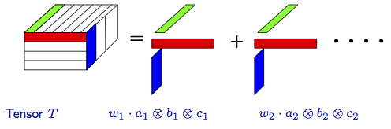
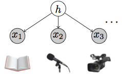
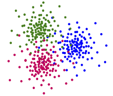

EECS, University of California, Irvine, CA 92697.
Learning several latent variable models including multi-view mixtures, mixture of Gaussians, independent component analysis and so on can be done by the decomposition of a low-order moment tensor (e.g., 3rd order tensor) to its rank-1 components. Many earlier studies using tensor methods only consider undercomplete regime where the number of hidden components is smaller than the observed dimension. In these series of works, we show that the tensor power iteration (as the key element for tensor decomposition) works well even in the overcomplete regime where the hidden dimension is larger than the observed dimension. We establish that a wide range of overcomplete latent variable models can be learned efficiently with low computational and sample complexity through tensor power iteration.
The analysis of learning overcomplete latent variable models is performed in a series of papers as follows. [1] analyze the algorithmic aspects where local and global convergence guarantees for tensor power iteration in the overcomplete regime is provided. [2] analyze the sample complexity guarantees for different latent variable models, and finally [3] provide a more precise analysis of the dynamics of third order tensor power iteration. A detailed description for each paper is also provided as follows.
[1] Guaranteed Non-Orthogonal Tensor Decomposition via Alternating Rank-1 Updates. by A. Anandkumar, R. Ge, M. Janzamin. Preprint, Feb. 2014.
Download: PDF. Code. Slides
In the first work of the series, we analyze tensor power iteration in the overcomplete regime where the tensor rank is larger than the tensor dimension. The asymmetric power iterations are equivalent to rank-1 ALS (Alternating Least Square) updates for the optimization problem of approximating original tensor by a rank-1 tensor. This problem is non-convex, and we provide both local convergence (given vectors constantly close to the true components) and global convergence (based on a rank-1 SVD initialization) guarantees. The guarantees also include tight perturbation analysis given noisy tensor.

[2] Sample Complexity Analysis for Learning Overcomplete Latent Variable Models through Tensor Methods. by A. Anandkumar, R. Ge, M. Janzamin. Preprint, Aug.
2014.
Download: PDF. Slides
As mentioned in the beginning, learning several latent variable models can be done by the decomposition of a low-order moment tensor to its rank-1 components. Following the analysis of overcomplete tensor decomposition in [1], we apply the tensor power iteration for learning some latent variable models including multi-view mixtures, mixture of Gaussians, independent component analysis and sparse coding. Note that we again emphasize on the overcomplete regime, where the dimensionality of the latent space can exceed the observed dimensionality. Our work can handle models with polynomial overcompleteness. The main technical analysis in this part is to argue concentration bounds for empirical moments through novel covering arguments which lead to optimal sample complexity in many settings. Our analysis establishes that a wide range of overcomplete latent variable models can be learned efficiently with low computational and sample complexity through tensor decomposition methods.
|  |  |
| Multiview mixtures model | Spherical Gaussian mixtures |
[3] Analyzing Tensor Power Method Dynamics in Overcomplete Regime. by A. Anandkumar, R. Ge, M. Janzamin. Preprint, Nov.
2014.
Download: PDF.
In our latest work in the series, we present a novel analysis of the dynamics of tensor power iterations, and an efficient characterization of the basin of attraction of the desired local optima. This is done by assuming random Gaussian tensor components, and analyzing the conditional distribution of each iteration conditioned on the previous iterations. We show that there exists enough randomness left in the next iterations enabling us to argue the convergence toward the local optima. In contrast to our earlier work in [1], here we analyze the dynamics of tensor power method when the initialization vector is far from the true tensor component, while in [1] we assume that the initialization is constant close to the true tensor component (having constant correlation with it). In addition, the analysis in this paper has random nature and the Gaussian assumption is crucial, while the assumptions in [1] are deterministic.